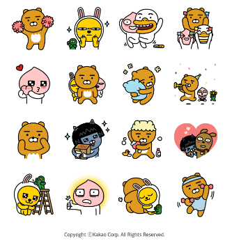

HEADER
Home
Overview
ChangeLog
Tech spec
Demo

project Overview
team member
thanks a lot
CSB-2000S 제품특징 스피커의 결합 및 분리가 가능하여 두 가지 형태로 사용할 수 있습니다.
CSB-2000S 부분 명칭 및 사용방법 (1) 전원 겸용 볼륨 조절 (2) 파워LED (3) 셀렉트버튼 (4) 헤드폰 단자 (5) 마이크 단자
CSB-2000S 사용법 1. 스탠드타이븡로는 메인 스피커를 우측, 서브 스피커를 좌측으로 설치하시고